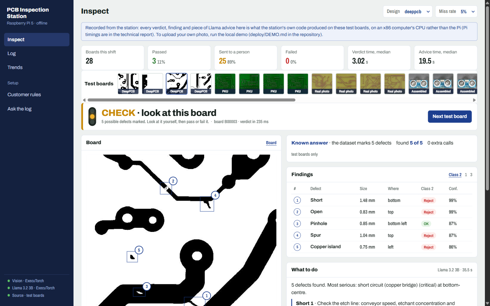
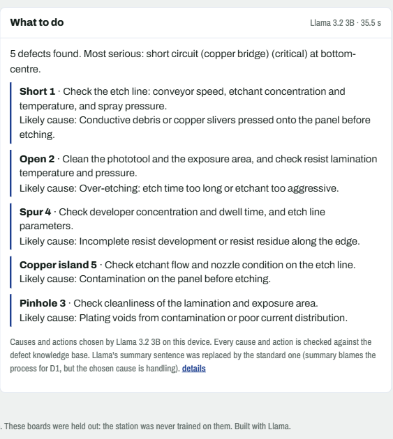

An offline inspector for circuit boards on a Raspberry Pi 5. It finds and measures defects, says PASS, FAIL or CHECK at a miss rate you choose, and Llama 3.2 on ExecuTorch tells the operator the likely cause and what to do next. This document explains the whole system in plain words.
A printed circuit board is a sheet of copper tracks on an insulating board. Before parts are soldered on, it must have no breaks and no stray copper. After assembly, every part must be there. Boards go wrong in a small number of ways:
| What goes wrong | What it looks like | Why it matters |
|---|---|---|
| Open, mouse bite, pinhole | A track is cut, nicked at its edge, or has a hole in it | The circuit breaks, or the thin spot fails later |
| Short, spur, spurious copper | Copper joins two tracks, sticks out of one, or sits where it should not | Two signals connect that never should |
| Missing hole, damaged pad, hole breakout | A drilled hole is missing or does not sit in its pad | A part cannot be fitted or connected |
| Scratch, foreign object | Surface damage or debris | Can cut a track or cause a short |
| Assembled boards: missing, extra or wrong part | A component is not there, is extra, or looks different | The board will not work |
A small electronics shop in India needs a station that finds these quickly, decides what each one means, tells the operator what to do, and keeps a record, all without an internet connection. It also has to answer a question most inspection systems skip: can I trust what it says, on my camera and my boards? That question shaped the whole design.
| Problem Statement 5 asks for | What the station does |
|---|---|
| Detect defects, cracks and anomalies | A defect detector for 11 types, a comparison with a known-good board, an "anything unusual" model and a part-by-part check for assembled boards |
| Classify type and severity | Type from the detector; size in millimetres from the good-board comparison; severity from IPC-style limits for Class 1, 2 and 3 |
| Alert operators with actionable advice | PASS / FAIL / CHECK with a green, red or amber light, and Llama's advice on cause and action |
| Log inspection results | Every board, finding, decision and piece of advice in a database on the Pi, exportable as CSV |
| Real time at the edge, no cloud | Every model runs on the Raspberry Pi 5's Arm CPU |
| A Llama model on ExecuTorch for reasoning | Llama 3.2 1B fine-tuned for this station (LoRA, 4-bit) for advice and shift questions; Meta's Llama 3.2 3B (SpinQuant 4-bit) for customer rules; all on ExecuTorch |
The operator places the board and presses Inspect (or a foot pedal). Within moments the station gives its verdict. Llama's advice arrives a little later; the verdict never waits for it.

Most detectors use a confidence threshold someone picked by eye, which says nothing about how many defects will get through. Here the operator picks the allowed miss rate instead: 1%, 5% or 10% of defects may slip through. The station sets its thresholds to keep that promise.
How, in plain words. Before deployment the station is shown boards it was not trained on, with known defects (the calibration boards). For each, it records how strongly it saw one real defect. If the miss rate should be 5%, the threshold is placed so that only 5% of those known defects would have scored below it. A new board from the same process is then missed with at most that probability. This is called conformal calibration. It makes no assumption about how the scores are spread. A second threshold limits how many good boards are failed. Boards in between go to a person.
The honest limit. The promise holds only while boards look like the calibration boards: same product, camera and light. The station checks each new photo's sharpness and brightness against the calibration photos, and never passes a board it could not line up with its reference. For a design where it has never seen a good board, it never says PASS: everything without a confident defect goes to a person.
A dataset score says how a model did on someone else's photos. The station measures itself, like an eye chart: a printed card carries 252 defects of known sizes, and the station states for each defect type the smallest size it finds 90% of the time with 95% confidence (the a90/95 method of the US military's inspection handbook, MIL-HDBK-1823A). Read on simulated photos of the card:
| Defect | Detector + known-good board | Detector only |
|---|---|---|
| Opens, spurs, spurious copper | from 0.20 mm (smallest tested) | not certified up to 1.00 mm |
| Shorts across gaps | from 0.34 mm | not certified up to 0.50 mm |
| Pinholes | from 0.42 mm | not certified up to 1.00 mm |
| Mouse bites | from 0.48 mm | not certified up to 1.00 mm |
A detector that scores 96% on DeepPCB cannot promise 90% detection of any size on its own. That is why the station leads with the known-good comparison. The real printed card is photographed on the Pi on 20-21 November.
The station measures clues for every defect from its own log:
Llama judges each possible cause from these clues and gives a percentage. On a close call it shows the two likely causes and the check that tells them apart. One line names the clue behind the cause, for example "the same spot on 6 of the last 10 boards".
After checking, the operator taps what the cause turned out to be. The station learns this line's causes from those answers, and Llama's percentages shift with them, without retraining on the Pi.
A customer writes "nicks that reduce the width by more than 20% are rejectable". The 3B fills a fixed rule form, choosing only answers the sentence supports. The rule is checked, compared with the station's measured detection limit, and read back to the operator.
"What is the pass rate today?" A keyword rule matches it to one of the station's fixed read-only database queries. It picked the right one for 75% of held-out questions, more often than the fine-tuned 1B, which was not trained for it. Llama then writes the answer with blanks, and the station fills in the numbers, so a wrong number cannot reach the screen.

| Test | Fine-tuned 1B (deployed) | Comparison |
|---|---|---|
| Right cause first, clue combinations never trained on | 70.0% | prompted 3B 40.0%; the rule table itself 67.5% |
| Right cause in the first two | 89.3% | prompted 3B 75.7% |
| Calibration error of the percentages | 0.048 | rule table 0.036 |
| Shift answers the checker accepts, 51 held-out questions | 90% | prompted 3B 37% |
| Why lines the checker accepts, 60 held-out cases | 100% | - |
| Customer rules exactly right, 40 held-out clauses (3B) | 62.5% | keyword reader 52.5% |
| Customer rules silently wrong (3B) | 2.5% | keyword reader 45.0% |
Honest limits:
Everything was trained on public datasets on a cloud GPU (Google Colab), then exported to ExecuTorch for the Pi. Test boards were kept apart from training, split by physical board wherever the data allowed, so the station is scored on boards it never saw.
| Dataset | What it is | Used for | Licence |
|---|---|---|---|
| DeepPCB | 1,500 binarised board images, each with its defect-free template, 48 px/mm | Detector training and test; known-good comparison; eye-test card patterns | MIT |
| PKU-Market-PCB | 693 colour photos of 10 boards with drawn-in defects | Detector training and test (split by board) | Released for research use |
| Mendeley PCB-Defect (2025) | 230 real etched boards, flatbed scans | Detector training and test | As stated on its page |
| DsPCBSD+ (2024) | 10,259 crops of real production-line inspection images | Detector training and test | CC BY 4.0 |
| DefectDet (2026) | 268 photos of real manufactured double-layer boards | Half the physical boards train, the other half test only | CC BY 4.0 |
| VisA pcb1-pcb4 | Photos of four assembled board designs, good and faulty | Assembled-board "anything unusual" model and its test; parts-check test | CC BY 4.0 |
| FPIC (Univ. of Florida) | Photos of assembled boards with every component labelled | Part detector and part-kind classifier (53 boards train, 15 held out) | Research collection |
| EPID | Assembled-board images | Test only | CC BY 4.0 |
| Real-IAD (pcb) | Industrial anomaly images, five camera views per board | Evaluation only: never trained on, never redistributed | CC BY-NC-SA 4.0 |
The sources look very different from each other: black-and-white scans, green solder mask, bare copper, production crops, phone-style photos. That variety is deliberate. Training also recoloured the scans as real board finishes and simulated camera effects, so the detector does not learn one look. The 11 defect types of all sources were unified into one list.
The first detector scored 97% on the datasets it was trained on, but only 18% on photos of real boards from another lab. Adding production-line data and half of the real DefectDet boards lifted the unseen DefectDet boards from 17.8% to 84.2%. That gap is why the station measures its own limits instead of quoting a dataset score.
| Detector version (mAP@0.5 on held-out boards) | All | DeepPCB | PKU | Mendeley | DsPCBSD+ | DefectDet |
|---|---|---|---|---|---|---|
| First version (3 sources) | 33.2% | 96.6% | 97.3% | 83.7% | 0.1% | 17.8% |
| + DsPCBSD+ | 70.4% | 96.6% | 91.2% | 83.3% | 75.1% | 30.2% |
| + DefectDet boards, recolouring (deployed) | 83.3% | 96.3% | 95.8% | 81.1% | 73.8% | 84.2% |
| At confidence 0.25 | Precision | Recall | F1 |
|---|---|---|---|
| All test boards (7,093 defects) | 76.6% | 81.0% | 78.7% |
| DeepPCB | 83.4% | 97.1% | 89.7% |
| DefectDet (unseen boards) | 73.2% | 86.9% | 79.5% |
The setting favours recall: better to show a doubtful box than hide a defect. The good-board comparison and the calibrated thresholds deal with false alarms.
What ships is what was measured. The exported ExecuTorch file gives the same mAP as the PyTorch model to within 0.05 points. The INT8 version is a third of the size (3.2 MB against 9.8 MB) and loses at most 0.4 points. All six detector files (three sizes, FP32 and INT8) were also run on Arm in an emulator and gave the same findings.
| Evidence used | Defects missed (95% range) | False calls per board | Named correctly |
|---|---|---|---|
| Detector only | 6.3% (4.9 to 7.9) | 0.12 | 99% |
| Known-good comparison only | 5.2% (3.9 to 6.6) | 0.49 | 81% |
| Both, merged (deployed) | 4.0% (3.1 to 5.0) | 0.29 | 99% |
On these boards 95% of good boards PASS and none FAIL; no defective board passes. Larger detectors (YOLO26s, YOLO26m) score higher mAP (85.8%, 86.8%) and ship too; which one runs is chosen from the Pi's timings.
| Test | Result |
|---|---|
| "Anything unusual" model, VisA pcb1-4: telling faulty from good boards (image AUROC) | 95.6% |
| Same model, locating the fault (pixel AUROC) | 97.9% |
| Same method on Real-IAD, five camera views, never trained on | 90.6% |
| Part detector on 15 held-out FPIC boards: precision / recall | 97.3% / 94.2% |
| Parts removed in software: reported missing (no call on any untouched board) | 86% |
| Real VisA photos, hand-made faults: missing parts found on the spot / good boards with a false call | 61% / 4.7% |
When the operator confirms defects and marks false alarms, the station can update a small model, which is switched on only if it hides no real defect. Simulated on held-out DeepPCB boards, the share of boards sent to a person fell from 20% to 4%, with no defective board passed.
The whole station runs on a Raspberry Pi 5 (8 GB, four Arm Cortex-A76 cores), offline. A phone or laptop on the Pi's own Wi-Fi hotspot opens the dashboard.
| Part | Runs as | File size |
|---|---|---|
| Defect detector (YOLO26n; s and m also shipped) | ExecuTorch, XNNPACK, FP32 or INT8 (or Arm's optimised YOLO26 runtime) | 9.8 MB / 3.2 MB |
| "Anything unusual" backbone (ResNet-18) | ExecuTorch, XNNPACK | 11.1 MB |
| Part detector and part-kind classifier | ExecuTorch, XNNPACK | 9.8 MB / 6.2 MB |
| Llama 3.2 1B Instruct, fine-tuned for this station (LoRA merged, 8-bit activations, 4-bit weights): advice and shift questions | ExecuTorch, XNNPACK with Arm KleidiAI kernels | 0.86 GB |
| Llama 3.2 3B Instruct, SpinQuant INT4: customer rules | ExecuTorch, XNNPACK with Arm KleidiAI kernels | 2.38 GB |
| Llama 3.2 1B Instruct, SpinQuant INT4 (fallback) | ExecuTorch | 1.08 GB |
Measured on the Pi on 20-21 November (bench/bench_device.py, deploy/measure_on_pi.sh): inspections per second and time to verdict, time per stage, detector speed in FP32, INT8 and Arm's runtime at 1, 2 and 4 threads, Llama's time to first token and tokens per second, memory with everything loaded, board power from the Pi's own power chip, and temperature over a 30-minute run. Until then, speed figures in this project are labelled with the machine they came from: the fine-tuned 1B's advice for a board with two defects, causes and why lines included, took 4.5 s on a cloud server CPU.
A dashboard served by the Pi shows, in order: the verdict with the stack light; the board with each finding numbered on it; a table of findings with size, place, IPC class result and confidence; and Llama's advice grouped by defect type. CHECK boards get Pass and Fail buttons that record the operator's name and reason. The Log tab lists every board and reopens it; Trends shows a Pareto chart of defect types and a control chart that flags when the process changes. Setup holds teaching a new board design from a few good boards, the eye test, customer rules and questions about the log.
Built with Llama. Llama 3.2 is licensed under the Llama 3.2 Community License. Dataset licences are listed in NOTICE.md.